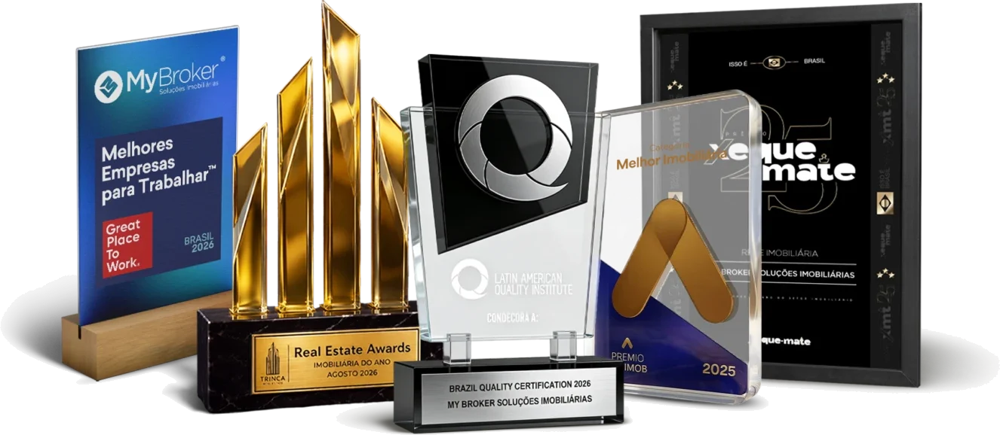

Uma marca premiada
Great Place to Work, Imobiliária do Ano no Real Estate Awards e Rede Imobiliária no Prêmio Xeque-mate.
Franquias My Broker
Marca, sistema Latitude, treinamento, marketing e suporte para você liderar uma operação imobiliária na sua cidade, com o método de quem vende um imóvel a cada 49 minutos.
Presença da rede no Brasil e nos Estados Unidos.
Profissionais conectados à operação da rede.
R$ 4,7 bilhões vendidos pela rede em 2025.
Capacitação na plataforma de ensino My Broker.
Franquia como negócio.
Você lidera. A rede estrutura. Empreender exige decisões, pessoas e processos, e você não precisa construir nada disso sozinho.

Três formatos de operação, com estruturas e capacidade comercial pensadas para diferentes projetos empreendedores.
A entrada na rede: uma operação enxuta, com a marca e o método completos desde o primeiro dia.
Mais espaço e mais time, para montar uma operação com presença e capacidade comercial maiores.
A operação de rua, sem teto de corretores, para quem quer liderar o mercado da sua cidade.
Na My Broker, marca, tecnologia, formação e suporte trabalham dentro de uma mesma jornada, da abertura da loja à próxima venda.
Great Place to Work, Imobiliária do Ano no Real Estate Awards e Rede Imobiliária no Prêmio Xeque-mate.
O sistema Latitude para acompanhar atendimentos, organizar imóveis e monitorar a operação.
Mais de 350 horas de conteúdo na plataforma de ensino My Broker e a Academia de Vendas para o seu time.
Orientações de marketing e desenvolvimento comercial para as ações da sua unidade.
Apoio em jurídico, financeiro, recursos humanos e processos de vendas.
Processos e ferramentas para a rotina comercial, os indicadores e a gestão do time.

Começou em 2011 com 12 corretores em Goiânia. Hoje são mais de 80 lojas e um imóvel vendido a cada 49 minutos.
Ronaldo Dantas, fundador e CEO da My Broker. O mesmo método que fez a rede crescer é o que chega à sua unidade: gestão, formação do time e a Academia de Vendas para os seus corretores.
Preencha em 1 minuto. A mensagem vai pronta para o WhatsApp do Ronaldo, que já marca a sua reunião com o time de expansão para apresentar o modelo, o investimento e o retorno da sua unidade.
O investimento inicial começa em R$ 49 mil no modelo Start, R$ 79 mil no Smart e R$ 120 mil no Pro. As condições completas são apresentadas na reunião.
Start: sala comercial de até 60 m² e até 15 corretores. Smart: office ou loja de rua de até 100 m² e até 40 corretores. Pro: loja de rua, sem limite de corretores.
A My Broker é para quem quer um papel ativo: liderar o time, acompanhar indicadores e tomar decisões. No formulário, conte como pretende atuar.
Sim. Mais de 350 horas de conteúdo na plataforma de ensino My Broker e a Academia de Vendas.